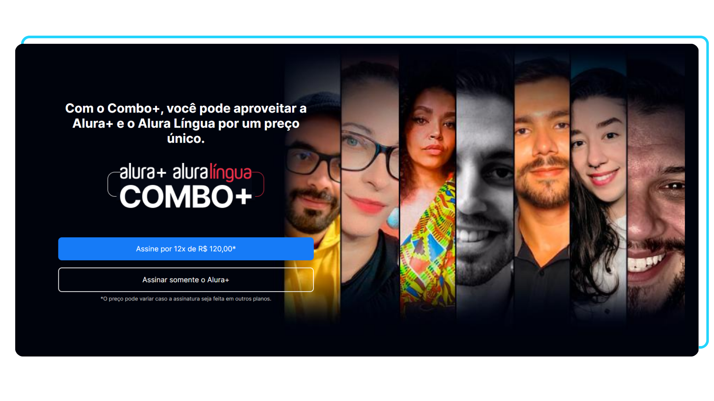

Projeto Alura Plus
Acesse o projeto clicando na imagem
O que é este projeto?
Este projeto consiste em um site responsivo focado 100% no Front-end.
O Alura Plus é uma plataforma de streaming da Alura, dedicada à assinatura dos planos Alura Plus e Alura Língua. A página em questão foi desenvolvida com o propósito de atrair e captar assinantes. Por meio dela, os usuários podem clicar nos botões para acessar a plataforma Alura e garantir sua assinatura.
O que foi usado neste projeto?
Neste projeto, foi utilizado HTML e CSS. O foco principal está voltado para o aprendizado sobre grid, flexbox, entre outros conceitos, os quais foram utilizados para posicionar os elementos presentes no projeto.
Este projeto foi desenvolvido com base no curso "HTML e CSS: praticando HTML/CSS" da plataforma Alura.
Voltar para a página anterior